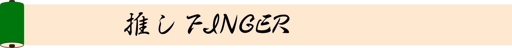
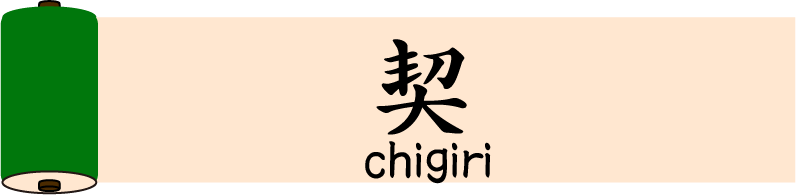
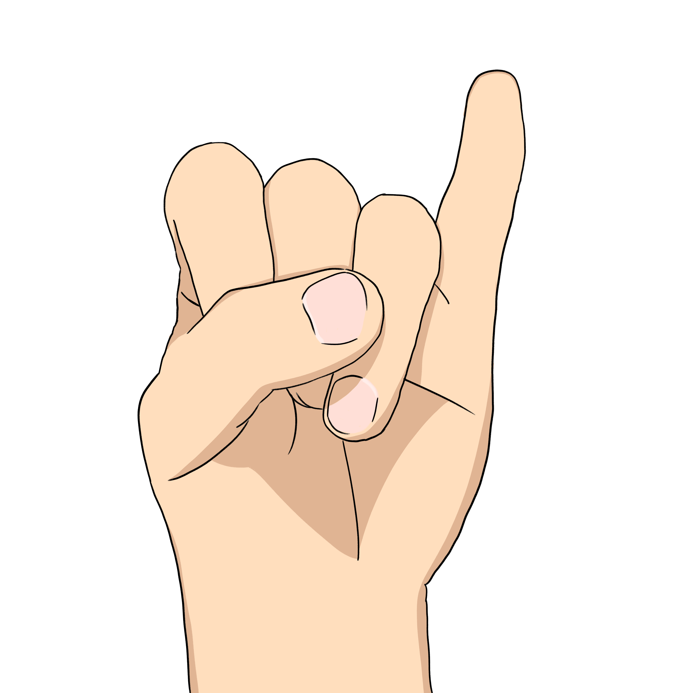
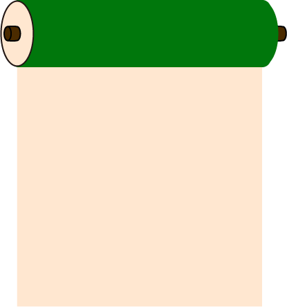

Top
承認欲求
average１
Central Fossa Magna
Time Traveler
契
 
味としてはしょっぱめの指である小指。 小指の爪だけ伸ばす人もいるとかいないとか。 自分のは少し内側に向いている模様。 小指同士を絡ませることでまじわせるのが「契」。 針千本を罰として与えることを条件に、契の縛りを強めている。 この「契」を結ぶときの角度は45°である。 あと球技でよく突き指するのもこの指である。 小指を立ててカップを持ち、飲み物を飲むことでマイスター感が表現できるが、 他人にはウケが悪いようだ。 鼻ホジに使う人もたまにいる。だからしょっぱいのか？